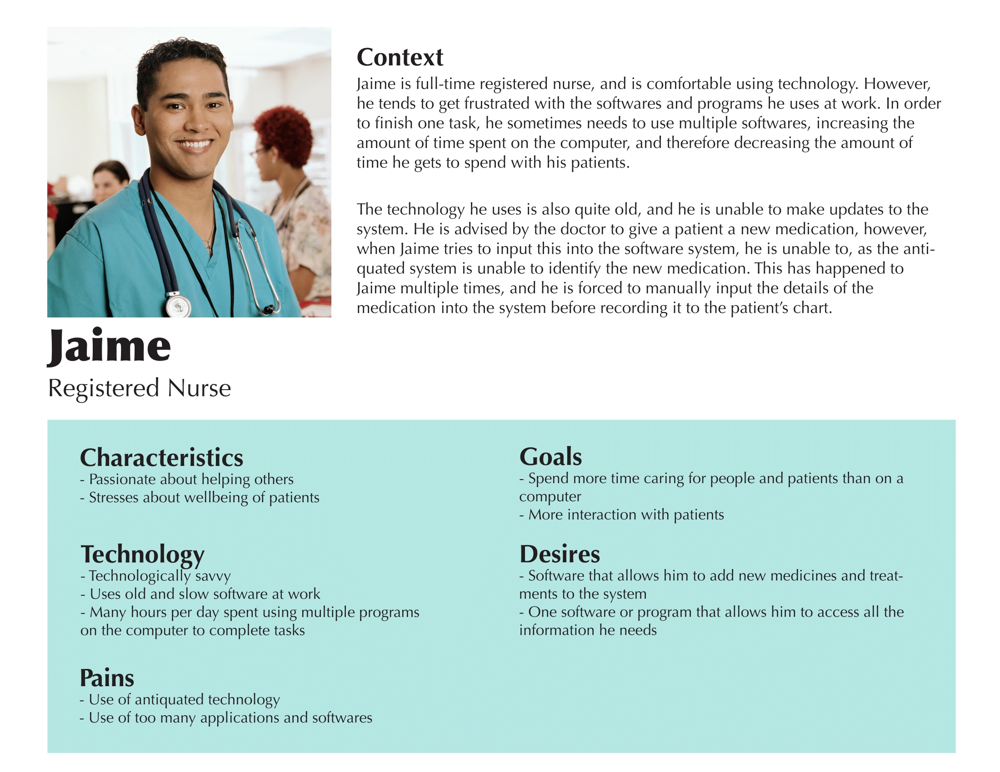
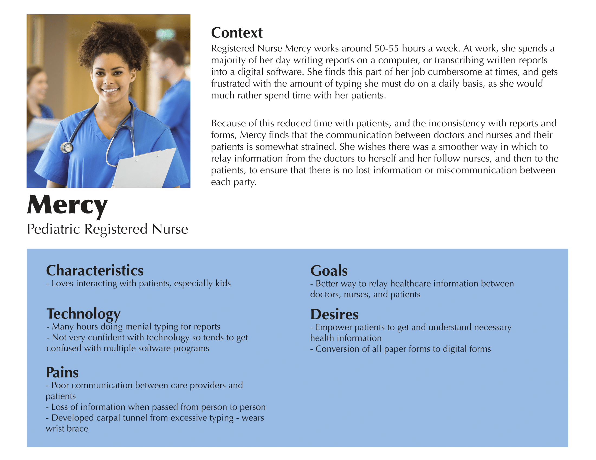
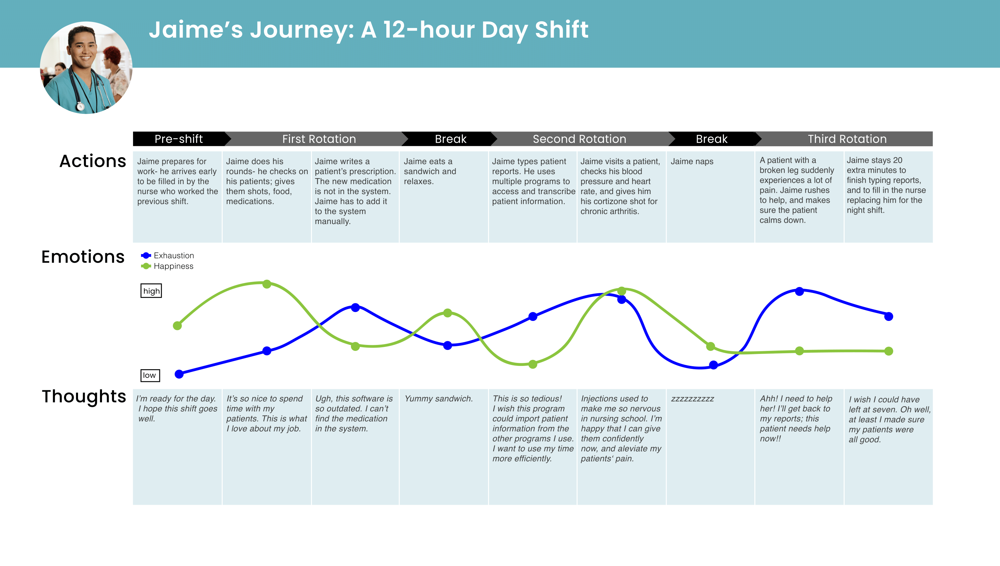

Introduction
When brainstorming user groups for this project, we wanted to pick a unique group that is often forgotten. This is the reason we decided to design a project for nurses, since they tend to be under-appreciated and underrepresented in the healthcare industry. After interviewing multiple registered nurses, we found their main pain point to be that they are unable to interact with their patients as much as they would like to. We found this very interesting, and aimed to focus on this pain point for our project. PocketNurse is a mobile application we designed that connects nurses and patients, and allows them to easily message one another. The mobile platform of this application allows for a more intimate connection to the patient, as people in general tend to have a very intimate connection to their mobile phone.
User Research
This deliverable was the first step in our user-centered design process. The research findings include details of three interviews we conducted of three registered nurses. The documents include a list of the questions the interviewees were asked, each interviewee’s responses, and all references we used when brainstorming questions. We each conducted one interview, and these interviews were necessary because we wanted to understand our users, registered nurses, better, and the pain points and desires they have. These research findings were an important first step before creating personas because we needed to first know some background about registered nurses before we could create our typical user.
Personas
The polished personas are a development made from the previous research findings. With the better understanding we were able to get from the interviews, we were able to create to two personas of who our optimal user would be. Each persona contains details such as the user’s characteristics, pain points, desires, needs, and comfortability with technology, as well as a short scenario describing how the pain points, desires, etc. relate to one another. We created these personas to better flesh out our user group, and better understand their pain points and desires. These personas were an integral step before creating the journey maps, because it was crucial to develop a scenario involving our users to incorporate into our user journey maps.
 User Journey Maps
The user journey map is a fleshed out visual depiction of a scenario that a potential user might go through. This map shows a nurse’s experiences during a routine twelve-hour shift, including their actions, emotions, and thoughts. We created a user journey map to help us to understand interactions from a nurse’s point of view, and to visually represent their needs, desires, and goals. The user journey map stems from one of our polished personas, registered nurse Jaime. Jaime’s persona provided us with the idea of whose journey we were mapping, and which key points to include. Making a user journey map required us to consider which pain points and desires would be important to map our in a scenario for our persona. In doing that, we gained a better understanding of what nurses value, and those values informed and were included in our next deliverable, the design requirements.
Design Requirements
The design requirements describe what our design should include in order to satisfy the pain points, desires, and needs of our users. This deliverable was necessary in our process because it allowed us to concretely establish the requirements that were necessary to our design. The user journey map we previously created helped us create various scenarios involving our users, which helped us to further understand the desires and pain points that we wanted to design for in our project. These requirements then allowed us to create even more specific scenarios for our storyboards that incorporated ways in which our design would interact with our user group.
Our design requirements are:
- Enable nurses to quickly and accurately record patient information to the electronic medical records.
- Provide nurses with an easy way to access patient data.
- Enable nurses to efficiently convey information to patients in a manner that they are easily able to understand.
- Allow nurses to easily add information and data to pre-existing patients’ records.
Storyboards
Creating storyboards was an integral part of our design process, as we were able to describe how the user would experience our design in a more specific and detailed manner. We each created two storyboards, one using photographs and the other with sketches. Each of these storyboards conveys a specific experience between our design and the user, and focuses on one of the design requirements we created in the previous deliverable. Using our storyboards, we were able to establish the basic structure of our design, which enabled us to complete our information architecture.
Information Architecture
Storyboarding gave us an understanding of how our user would interact with and flow through our design on a general level. At this stage, we needed to think about the entire system and lay it out in our information architecture, or sitemap. To create this sitemap, we planned out how to break down all of the high and low level pages in our application. We utilized our design requirements to figure out the content and flow of information for both the nurse and patient side of our application. Once we had the flow of the entire system worked out, we began thinking about and sketching what each screen would look like.

Paper Prototype
The paper prototypes built off our information architecture by adding real screens and actions to the functions we described in the information architecture. We hand-drew the screens of main pathways of our app, and tested them with people not on our design team to identify interface problems. Creating paper prototypes was an informative and helpful exercise that enabled our group to put our user research into a tangible form. After we made our paper prototypes, we were able to evaluate them via user testing, and determine what about them needed to be changed, and what about them was successful.
Usability Testing
After creating our paper prototype, we conducted another round of user testing in which we asked our users to perform specific tasks using our paper prototype. These evaluation findings detail the notes and results of this user testing, which helped us understand any confusion in our design, or areas that are unintuitive. These findings then enabled us to make changes to our design which we were able to incorporate into the more detailed versions of our design.
Annotated Wireframes
The annotated wireframes we made are low-fidelity outlines of our app that show where content goes. They have annotations on them that describe the functions of aspects of the wireframes. We made these wireframes to help us organize the architecture of content on the app, and to solidify what the layout of our app would be. The previous deliverable we made, our experience evaluation of testing our paper prototypes, helped inform our choices for the wireframes: we learned which processes were not intuitive, which icons did not make sense, and what seemed important. The wireframes were a rough draft for our high-fidelity mock-ups, and our classmates’ feedback on them informed us of the important aspects to incorporate in our next iteration.
High-Fidelity Mock-ups
For this project, the last step in the design process was creating our high-fidelity mockups. After an in-class peer critique session, we selected a few screens from our low-fidelity wireframes to further design. With the feedback and critiques in mind, we worked to remove the placeholders as well as solidify our color scheme and layout. Creating these high-fidelity mockups helped us to convey our ideas in a more complete, professional manner and brought together all the elements we have worked so hard on for the past ten weeks.